일기
2021년 7월 30일
오늘은 HTML을 공부했다. 열심히 해서 웹 마스터 하자~~ 화이팅!!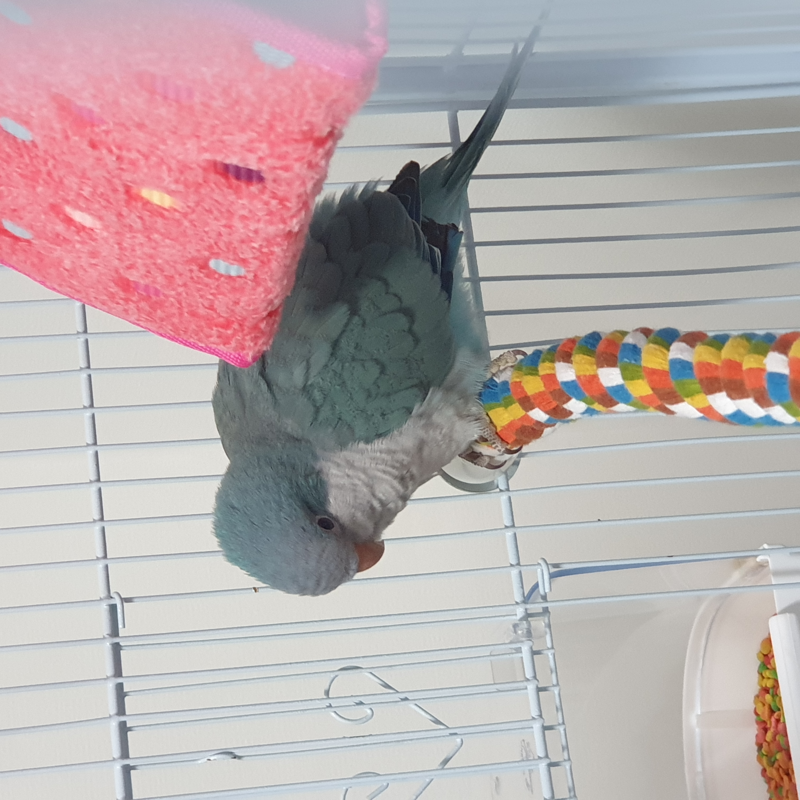
[귀여운 여름이.. 어렸을적 모습이다.]
2021년 7월 29일
오늘은 알바갔다 돌아와서 산책했다.왜 달이 안보이지.. 원래 잘 보였는데, 아쉽다~
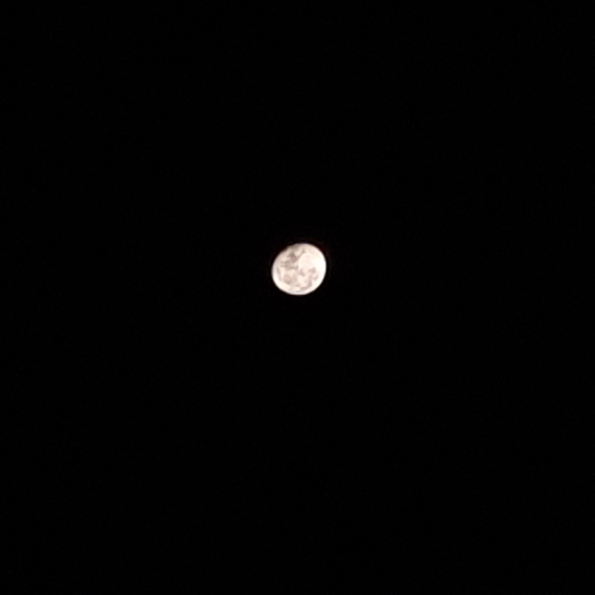
[이건 며칠 전에 찍은 달 사진]
2021년 7월 26일
오늘은 오랜만에 종로를 갔다!종로가서 마라탕 단골집도 가고~ 더웠지만 재밌었던 걸로..
내 제 2의 고향 종로 올만~
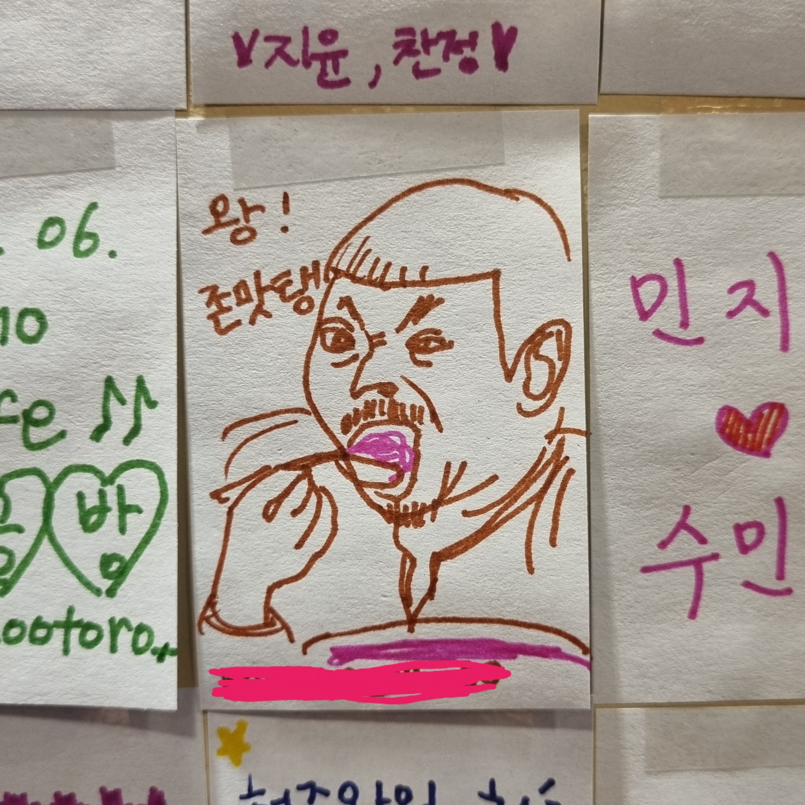
[이정도했으면 눈치껏 이벤트 당첨되라~]
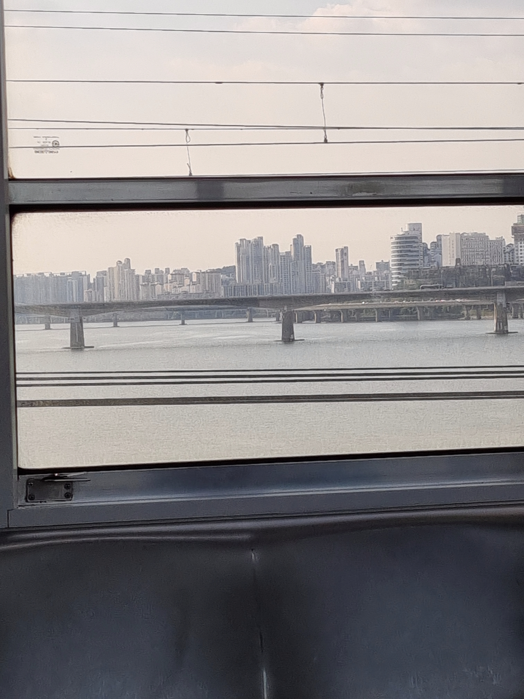
[그리고 언제나 예쁜 한강]
2021년 7월 19일
오늘은 2021년 7월 19일 입니다.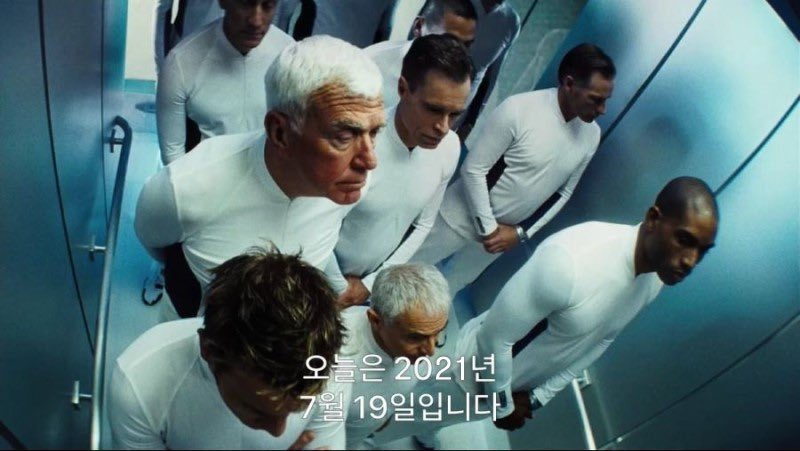
[영화 아일랜드]
2021년 7월 15일
꼬꼬꼬꼬꼬아찌~~
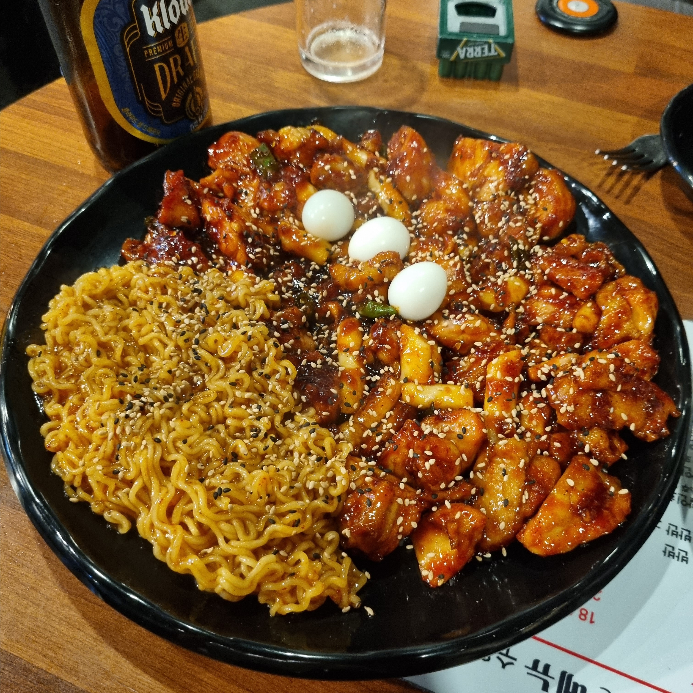
[배고파..]
2021년 7월 9일
흔들리는 꽃들 속에서,,,네 샴푸향이 느껴진 거야,,
오늘도,,좋은,.,하루..,
저 아름다운 꽃같은 인생이길 바랍니다~~*^^*
장미 꽃 한 송이 두고 갑니다..
총총,, *@}>->----
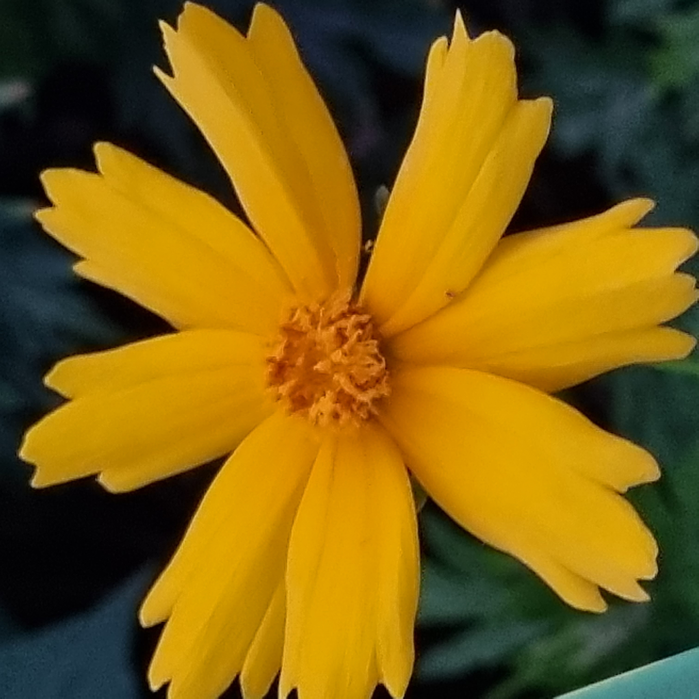
[산책하다...이름모를..예쁜..꽃]
2021년 7월 8일
돼지 껍데기 존맛탱구리with 세은
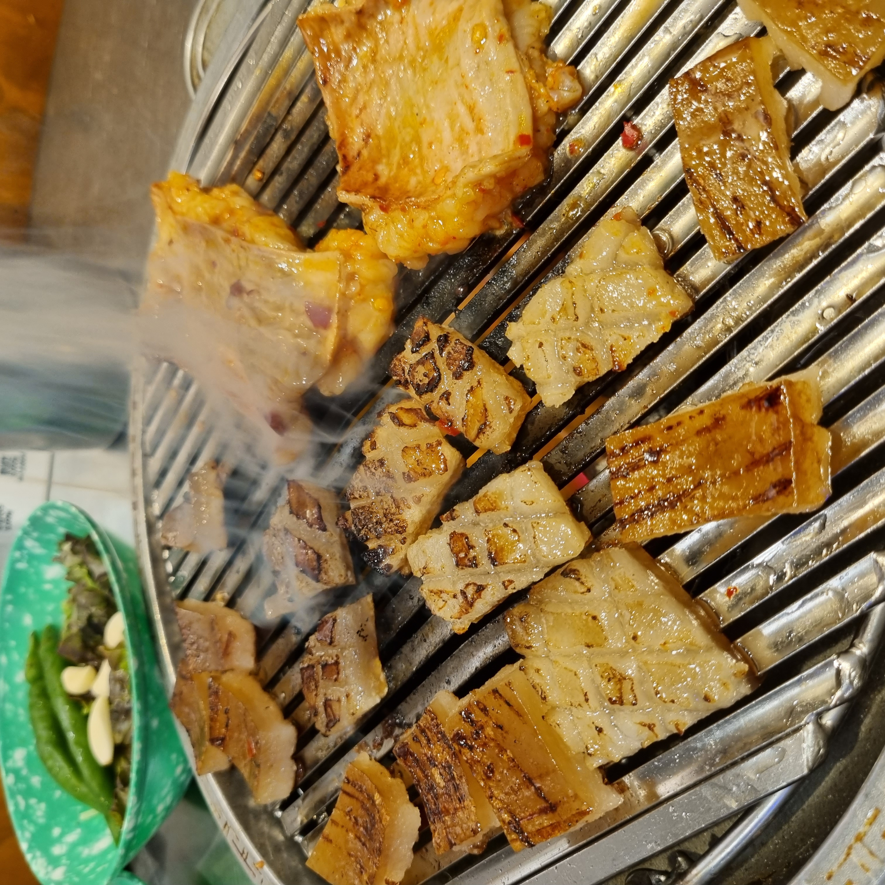
[인계동 겁데기]
2021년 7월 2일
갑자기 바다더워 죽을 뻔..
그래도 이쁘다!!
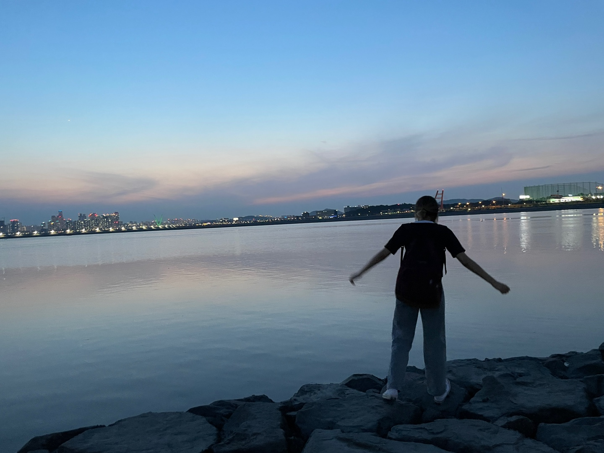
[신나서 날뛰네]
2021년 6월 28일
신나는 등굣길~어쩜 이렇게 논밖에 없냐~^^
시골이여 시골
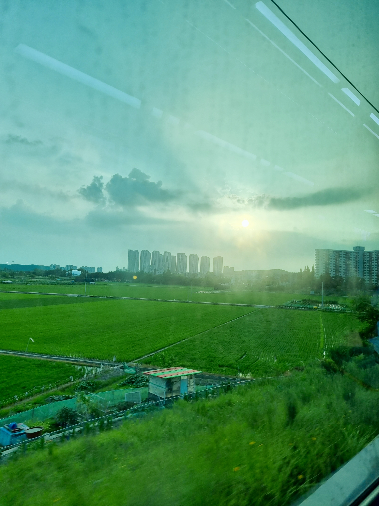
[지하철 풍경]
2021년 6월 23일
술이 쓰냐..?난 인생이 쓰ㄷr...*
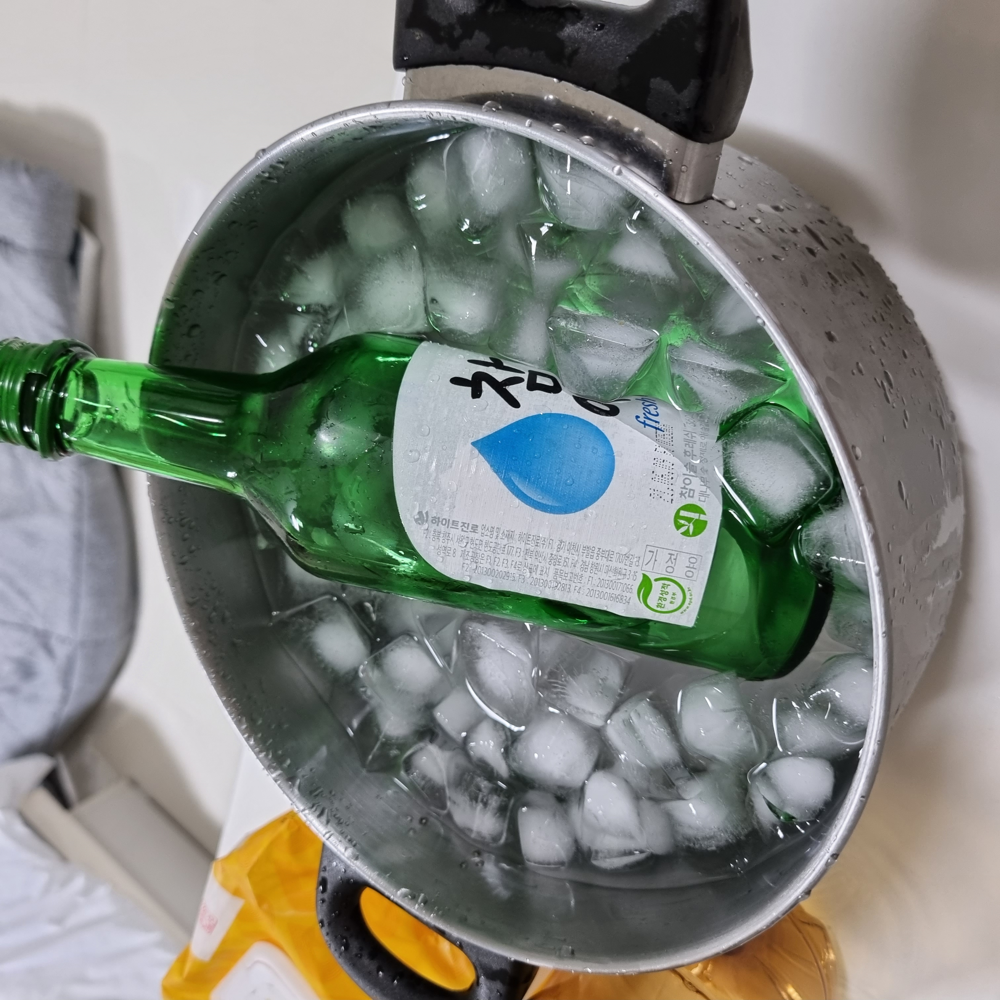
[참와인]